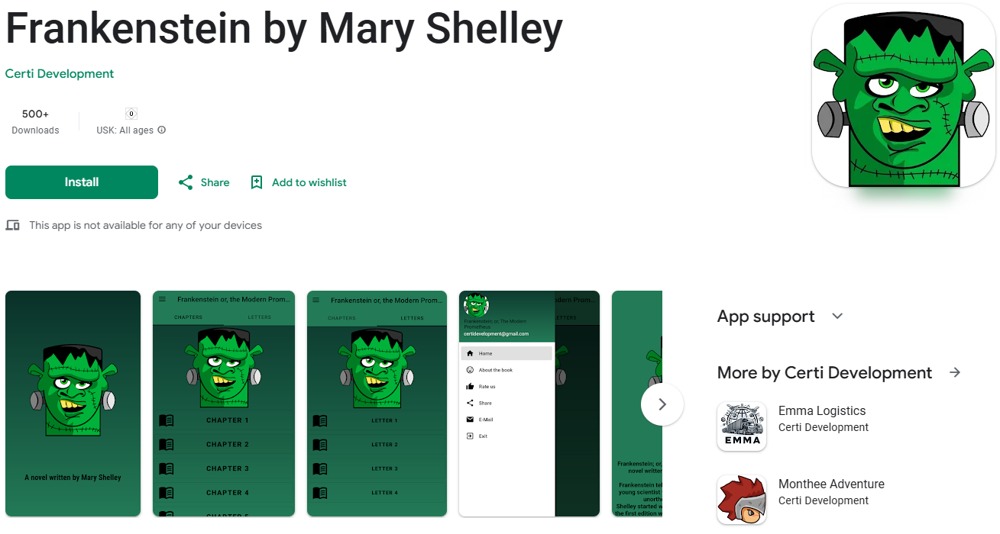

Frankenstein is an immersive Android application that brings the timeless classic of Mary Shelley's Frankenstein to modern devices. The app reimagines the story for mobile audiences, offering an interactive and engaging reading experience that explores the origins, background, and essence of Shelley's iconic novel.

Key Features:
- Interactive Storytelling: Follow Victor Frankenstein’s journey as he brings his creation to life, with immersive visuals and audio enhancements.
- Historical Context: The app includes background details about Mary Shelley's inspiration, her travels through Europe, and the significance of Frankenstein Castle.
- Unique Design: Carefully crafted layouts and illustrations complement the eerie atmosphere of the novel.
- Customizable Experience: Users can zoom the text or copy the text and share it with others.
- Shareable Quotes: Easily share memorable lines from the novel with friends through integrated social media features.
Technical Specifications:
- Platform: Android – Developed using Android Studio with Java and XML for dynamic and responsive layouts.
- Development Tools: Android Studio, Adobe Illustrator (for assets), and custom XML styling.
- Deployment: Published on the Google Play Store, accessible to Android users globally.
- Security: User data is secured with Android best practices, ensuring privacy and data integrity.
- Offline Support: Read the entire novel without needing an internet connection after download.
How It Works:
- Download the app from Google Play and launch the interactive novel.
- Experience the story chapter by chapter, with options to jump between sections or revisit key moments.
- Engage with interactive elements that highlight important historical and literary references.